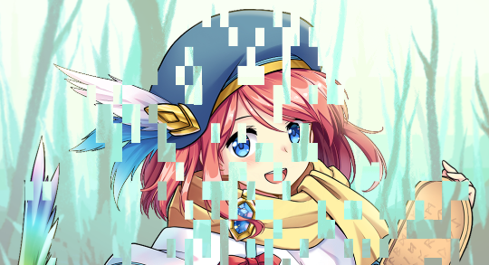
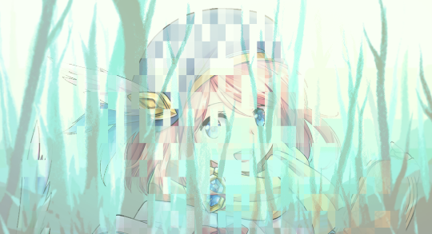
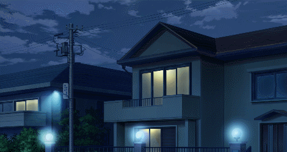
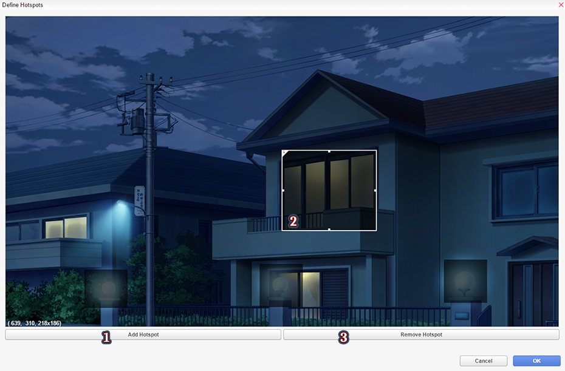
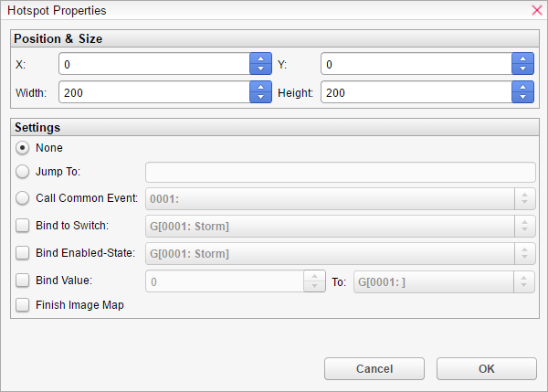
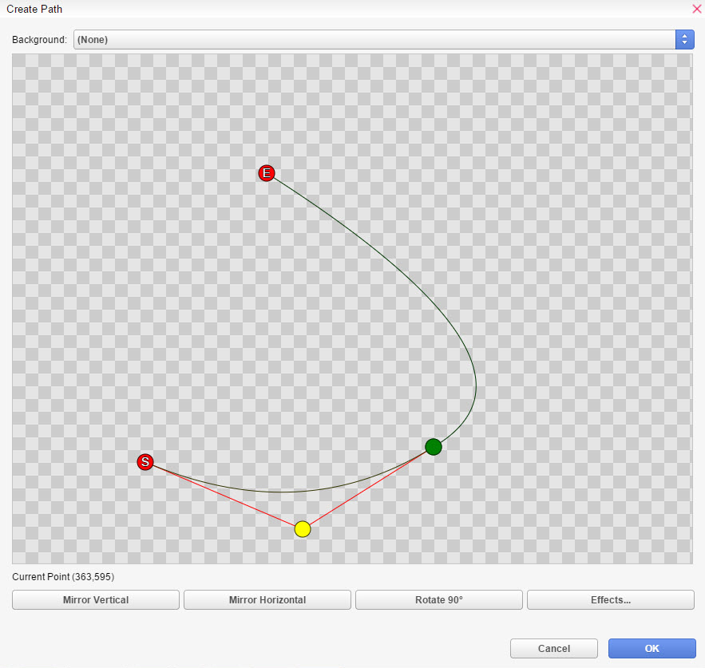

图片
T图片命令允许您设置图像、图像映射、动画和各种其他效果，以创建动态和身临其境的场景。
将图片添加到场景。
编号- 图片的索引（ID）。这决定了它们的图层顺序。
您也可以通过点击数字输入框旁边的 [...] 来使用变量。
文件- 要显示的“Pictures”文件夹中的图像文件。
锚点 -在左上角和中心之间选择锚点位置。
将锚点设置为中心仅在将使用缩放和旋转命令时才重要，并且不会影响定位。
位置- 在“直接”和“计算”定位之间选择，将您的图片放置到场景中。
预定义允许选择一个 在“数据库 > 系统 > 预定义对象位置”中配置的预定义位置。
直接允许您使用图形编辑器设置位置。您还可以设置背景图片以提高准确性。
计算允许您通过输入 X 和 Y 坐标或通过设置变量来定位图片。
持续时间- 动画播放的毫秒数。
继续将使场景立即 继续。
等待将使场景等待动画播放完毕。
效果- 这些选项会影响图片的外观。
缓动设置图片的缓动移动。更多信息请参阅缓动效果页面。
动画设置图片的移动方式。
移动是图片出现时的起点，从左/上/右/下出现。
混合允许您淡入/淡出图片。
遮罩允许您将图片遮罩到 Mask 文件。
模糊是遮罩边缘的平滑度。这里是模糊值 0（最小值） 和 255（最大值）的比较。
显示- 允许您指定图片的显示顺序和锚点。
Z 轴顺序- 设置图片的显示顺序。您也可以通过点击数字输入框旁边的 [...] 来使用变量。
混合模式- 确定显示图片时使用的混合类型 屏幕上。
正常是标准的 混合模式。它只会简单地在屏幕上显示图片 而不混合颜色。
加法结果图片 将以更亮的颜色应用。
减法结果图片 将以更暗的颜色应用。
视觉类型- 确定要使用的显示逻辑类型 屏幕上显示图片。
图像- 选择的图像 文件在屏幕上显示为普通的单张图像。平铺图像
- 选择的 图像文件被平铺以填充为 尺寸定义的空间。边框- 选择的图像文件 用于构建适用于游戏内窗口等的边框， 尺寸 。有关边框的更多信息，请参阅资源标准
。厚度- 边框厚度 像素。角落尺寸- 边框的角落尺寸（像素）。三部分图像
- 选择的 图像文件用于构建适用于按钮等的三个部分图像， 尺寸 。有关三部分图像的更多信息，请参阅资源标准
。 方向
- 三部分图像的方向。可以是 垂直或水平。四边形- 选择的图像文件 将被忽略。相反，将显示一个具有所选 颜色 和 尺寸 的方块，这对于消息背景等非常有用。其优点是 与图像相比，图形内存消耗极低。
颜色- 方块的颜色。尺寸- 确定图片的大小。这只会影响具有 视觉类型非 图像的图片。自动
- 图片的大小 将自动计算以匹配所选图像文件的大小。设置- 图片的大小 将设置为定义的尺寸。宽度- 图片的宽度。高度
- 图片的高度。 视口
- 图片将被分配到的视口。视口决定图片 是否受相机移动或屏幕效果的影响。场景- 图片被分配 到场景视口，并像属于场景的对象一样行为，因此它会受到相机移动和屏幕效果的影响。用户界面- 图片 被分配到 UI 视口，并像属于用户界面的对象一样行为，因此它不会受到相机移动和屏幕效果的影响。
移动 图片将图片移动到屏幕上的指定位置。
编号- 要移动的图片的索引（ID）。
位置- 在“直接”和“计算”定位之间选择，以设置图像的目标位置。
预定义允许选择一个 在“数据库 > 系统 > 预定义对象位置”中配置的预定义位置。
直接- 允许用户使用图形编辑器设置目标位置。
计算- 允许用户通过变量操纵目标位置。
持续时间 - 移动动画的毫秒数。
将使场景立即 继续。
等待将使场景等待移动动画完成。
缓动设置图片的缓动移动。更多信息请参阅 缓动效果
页面。着色 图片
更改当前显示图片的颜色色调。编号
- 要操作的图片的索引（ID）。色调 控制
- 控制图片颜色。调整红色、绿色和蓝色的色调（-255 到 255）。使用灰色设置灰度滤镜的强度（0 到 255）。值越高，颜色的整体强度越大。
对话框底部的“正常”、“深色”、“棕褐色”、“早晨”和“夜晚”按钮可快速应用其各自名称所代表色调的标准值。“正常”按钮恢复到原始色调。您可以在对话框顶部预览区域中查看色调变化。
持续时间- 确定着色效果将持续多长时间。
继续将使场景立即 继续。等待将使场景等待退出动画完成。
影响色调的动画。更多信息请参阅 缓动效果
页面。闪烁 图片
用指定的颜色瞬间填充图片，然后逐渐恢复到原始颜色。颜色
控制
- 控制闪烁颜色。使用红色、绿色和
蓝色滑块（0 到 255）来指定要闪烁的颜色。
您可以在对话框顶部的预览区域中查看指定的颜色。使用“强度”来指定颜色的不透明度（0 到 255）。
将“强度”设置为“0”会使颜色完全透明，使其在屏幕上不可见。
持续时间- 确定闪烁效果将持续多长时间。
继续将使场景立即 继续。
等待将 使场景等待闪烁动画完成。
旋转 图片以指定的 速度和方向旋转您的图片。编号- 要操作的图片的索引（ID）。
- 将图片设置为顺时针或逆时针旋转。
速度- 旋转速度。值越高，旋转越快。
持续时间
- 确定旋转效果将持续多长时间。
继续将使场景立即 继续。
等待将使场景等待退出动画完成。
缓动 影响旋转的动画。更多信息请参阅 缓动效果
擦除 图片
擦除场景中已显示的图像。编号
- 要从屏幕上移除的图片的索引（ID）。持续时间
- 图像从场景中消失所需的时间。继续
将使场景立即 继续。等待
将使场景等待擦除动画完成。缓动
影响擦除动画。更多信息请参阅 缓动效果页面。
动画设置图片的移动方式。移动是图片消失时的起点，从左/上/右/下消失。
允许您淡出 图片。
遮罩允许您将图片遮罩到 Masks 文件。
模糊是遮罩 边缘的平滑度。这里是模糊值 0（最小值）和 255（最大值）的比较。
裁剪 图片重新定义您的图片边界，以您希望的方式裁剪您的图像，而无需编辑原始图像文件。
编号- 要操作的图片的索引（ID）。
X- 从图片原始尺寸的左侧或右侧开始裁剪图像的 X 像素。Y- 从图片原始尺寸的顶部或底部开始裁剪图像的 Y 像素。
宽度- 设置裁剪图像的新宽度，从上面设置的 X 位置开始。
高度- 设置裁剪图像的新高度，从上面设置的新 Y 位置开始。
混合 图片将图片混合到指定的 不透明度。
编号- 要操作的图片的索引（ID）。
不透明度- 不透明度。
-
混合动画的 持续时间。继续
将使场景立即 继续。等待
将使场景等待混合动画完成。缓动
影响混合动画。更多信息请参阅 缓动效果页面。
缩放 图片缩放图片。
- 要操作的图片的索引（ID）。
缩放 X- 影响图片的水平缩放。
缩放 Y- 影响图片的垂直缩放。
持续时间 -图片改变其缩放百分比的 速率。
继续将使场景立即 继续。
等待将使场景等待缩放动画完成。
缓动影响缩放动画。更多信息请参阅 缓动效果页面。遮罩 图片
编号
- 要操作的图片的索引（ID）。文件
- 选择一个遮罩文件应用到 您的图片。图片
允许您使用 Graphics/Masks 中的遮罩图像 文件。电影
允许您使用电影文件 作为遮罩。您的电影文件需要以 .webm 格式导入到 Movies 文件夹。 即使您的电影文件包含颜色信息，它也会使用 红色通道进行遮罩。类型
选择 您想进行的遮罩类型。静态
允许您叠加一个遮罩图像，该图像以 alpha 应用。偏移 X
根据设置的值，将遮罩图像向左 或向右移动。偏移 Y根据设置的值，将遮罩图像向上 或向下移动。动态
值
可以是 0 到 255 之间的任意值。它控制哪些像素从被遮罩的图像可见。如果值为 0，则不显示图像遮罩。您添加的值越多，图像遮罩就越可见。
模糊允许您在遮罩边缘应用平滑。这里是模糊值 0（最小值）和 255（最大值）的比较。
持续时间- 确定遮罩效果的 发生速度。
继续将使场景立即
继续。
等待
将使场景等待遮罩效果完成。 效果
- 这些选项会影响
图片的外观。缓动
设置图片的缓动移动。更多信息请参阅 缓动效果页面。
显示 图像映射创建图像映射并定义用户可以交互的状态和区域。图像映射与图片共享相同的编号/ID 空间。这意味着所有图片命令也可用于图像映射，除了 旋转图片
和缩放图片。
编号
-图像映射的编号（ID）。区分
多个图像映射所必需。
位
置
- 在“直接”和“计算”定位之间选择，将您的图像映射放置到场景中。预定义


允许选择一个 在“数据库 > 系统 > 预定义对象位置”中配置的预定义位置。直接
允许您使用图形编辑器设置位置。您还可以设置背景图片以提高准确性。计算
允许您通过输入 X 和 Y 坐标或通过设置变量来定位图像映射。地面
- 您地图的基础图像。悬停
- 允许您设置当鼠标悬停在热点区域时显示的图像。请注意，图像尺寸必须与地面图像相同。热点- 定义将检测光标/用户交互的区域。您可以 添加、移除和移动热点。(1) 添加热点
(2) 热点- 添加一个交互式区域，该区域将根据其状态显示悬停/选中/未选中图像的一部分。双击它可以更改其大小并设置属性。热点属性- 允许您设置图像映射热点的属性。可以通过双击热点来访问。

.位置 和大小
- 通过值调整热点的坐标和大小。X调整热点向左或向右的位置。
Y调整热点向上或向下的位置。
宽度调整热点的宽度。
高度调整热点的高度。
设置- 为热点赋予属性。当热点被点击时激活。
跳转 到调用标签。
调用 公共事件调用公共事件。

绑定 到开关将热点的选择状态存储在 选定的开关中。
绑定 启用状态将热点的启用状态存储在 选定的开关中。
绑定
值如果热点被点击，则将自定义数字值存储到指定的
数字变量中。
完成
图像映射

停止图像映射命令并启动下一组命令。您必须手动调用“擦除图像映射”将其从屏幕上移除。
(3) 移除热点- 从图像映射中移除一个热点。
持续时间- 图像映射出现所需的时间。
状态- 此部分用于设置未选中、选中和 选中悬停状态的所需图形。
未选中- 热点处于启用状态时的图像。
地面 图像在禁用之前不可见。选 中
：设置区域被选中后区域的外观图像。这仅在设置了“绑定到开关”时才有效。选中悬停
：它允许 您为已选中区域的悬停设置另一种图像状态。这仅在设置了“绑定到开关”时才有效。
效果- 这些选项会影响 图像映射的外观。
缓动设置图像映射的缓动移动。更多信息请参阅 缓动效果
页面。动画
设置图像映射的移动方式。移动
是图像映射的起点，将从左/上/右/下消失。
混合允许您淡出 图像映射。
遮罩允许您将图像映射遮罩到 Mask 文件。
模糊是遮罩 边缘的平滑度。
擦除 图像映射移除图像映射。编号 -
要擦除的 图像映射的编号（ID）。区分多个图像映射所必需。持续时间- 图像映射消失所需的时间。
设置图片的缓动移动。更多信息请参阅 缓动效果页面。动画设置图片的移动方式。
移动是图片消失到 左/上/右/下的起点。
混合允许您淡出图像映射。
遮罩允许您将图像映射遮罩 到 Masks 文件。
模糊是遮罩边缘的平滑度。
沿路径移动 图片允许您通过点和曲线创建自定义移动路径来移动图片。
- 要移动的图片的索引（ID）。
路径- 打开路径编辑器，允许您通过曲线定义路径。您可以右键单击删除运动点，或单击空白区域添加新的运动点。
S 圆圈(
) 是运动的起点。绿色圆圈
() 是运动中的一个点，允许您获得更动态的运动。
黄色圆圈() 调整运动曲线。如果您按下绿色圆圈（），您也可以为此路径调整运动。
E 圆圈(
) 是运动的终点。垂直镜像 -
垂直翻转曲线。水平镜像
- 水平翻转曲线。旋转 90*
- 将曲线旋转 90 度。效果
循环
- 允许您在持续时间内重复路径。无
- 关闭循环。正常
- 从终点循环路径。反向- 从终点以相反方向循环路径。
持续时间- 运动完成所需的时间（以毫秒为单位）。等待/继续
- 将命令设置为等待意味着场景将在运动结束后等待，然后加载下一个命令。显示 动画在屏幕上显示动画。动画与图片共享相同的编号/ID 空间，因此所有图片命令也可以与动画一起使用。编号
- 您要用于播放动画的图片的索引（ID）。动画- 您要使用的数据库中的动画。

锚点- 在左上角和中心之间选择锚点位置。
将锚点设置为中心仅在将使用缩放和旋转 命令时才重要，并且不会影响定位。位置
- 在预定义、直接和计算定位之间选择，将您的动画放置到场景中。预定义
允许选择一个在“数据库 > 系统 > 预定义对象位置”中配置的预定义位置。直接
允许您使用图形编辑器设置位置。您还可以设置背景图片以提高准确性。计算
允许您通过输入 X 和 Y 坐标或设置变量来定位动画。
持续时间- 出现动画的持续时间（以毫秒为单位）。
继续将使场景立即继续。
等待将使场景等待直到出现动画完成。
效果- 这些选项会影响图片如何显示。
缓动设置图片的缓动运动。更多信息可在缓动效果页面中查看。
动画设置图片的运动。
运动是动画的起点，它将从中出现
从左/上/右/下。混合
允许您淡入/淡出动画。遮罩
允许您将动画遮罩到遮罩文件中。模糊
是遮罩边缘的平滑度。此处为模糊
值为 0（最小值）和 255（最大值）的比较显示
- 允许您指定图片的显示顺序和锚点。Z 顺序
- 设置图片的显示顺序。您也可以通过单击数字输入框旁边的 [...] 来使用变量。混合
模式- 确定图片显示在屏幕上时使用的混合类型
普通是
，而不混合颜色。
加法结果图片将以更亮的颜色显示。
减法结果图片将以更暗的颜色显示。
抖动
图片剧烈地
移动您的图片以获得戏剧性效果。
数字- 您要操作的图片的索引（ID）。
X范围
- 设置图片的水平移动。它会在您设置的值的正负之间随机化。例如，如果您输入 5，它将使图片在 -5 到 5 之间抖动。
Y范围
- 设置图片的垂直移动。它会在您设置的值的正负之间随机化。
例如，如果您输入 5，它将使图片在 -5 到 5 之间抖动。速度- 将通过设置像素偏移量来确定抖动的强度或力度。
- 缩放的持续时间（以毫秒为单位）。
继续将使场景立即
继续。等待
将使场景等待直到退出动画完成。效果
- 这些选项会影响图片如何显示。 缓动
设置图片的缓动运动。更多信息可在缓动效果
页面中查看。图片
效果将效果应用于图片。
类型- 将应用于图片的那个效果。
摆动使电影以不规则
和不稳定的方式移动。这仅在禁用循环时有效。强度
设置摆动的强度。它使摆动效果在值越高时越明显。
速度设置
摆动的速度。值越高，速度越快。方向
- 设置摆动方向。
垂直将摆动方向设置为垂直方向。水平
方向设置为水平方向
两者将摆动方向设置为
两者。持续时间
设置效果持续时间（以毫秒为单位）。模糊
对图片无效。像素化
使图片看起来
宽度
设置单个块/像素的宽度。
高度设置单个
块/像素的高度。持续时间
设置需要多长时间（以毫秒为单位）才能使像素化达到指定的
块/像素大小。使用此选项可平滑地像素化图片。缓动
将缓动应用于效果动画。更多信息可在缓动效果
页面中查看。图片
动态模糊为您的图片应用动态模糊。这必须设置在图片的移动命令（如[移动图片]或[沿路径移动图片]）之上。
动态模糊
- 设置为“是”以应用动态模糊，“否”以关闭。生成时间
- 创建新副本后的帧数。默认值为 2。溶解速度
- 生成的副本消散的速率。具体来说，副本的透明度在每一帧都会降低。
不透明度- 副本生成时
的初始不透明度。默认值为 100。 例如，如果溶解速度为 2，则阴影/鬼影/粒子
将在 50 毫秒后完全消失/消失。添加热点
为屏幕添加可点击和/或可拖动的区域。如果单击热点，状态将变为“已选定”。
在再次单击热点之前，它将保持此状态。数字- 您要操作的热点的索引（ID）。位置
- 在“直接”和“计算”定位之间进行选择，以设置热点的目标位置。
直接- 允许用户使用图形编辑器设置
目标位置。计算
- 允许用户通过变量来操作目标位置。
图片编号- 将当前显示的图像之一转换为热点。
热点属性
- 允许您设置热点的属性。可以通过双击或右键单击 -> 属性来访问热点。
位置和大小- 通过值调整热点 的坐标和大小。
X调整热点向左或向右的位置。 Y
调整热点向顶部或底部的位置。宽度
调整热点的宽度。高度
调整热点的高度。水平翻转/翻转
翻转热点。单击时
- 用户单击时，将触发命令。
跳转到
跳转到标签。调用
通用事件调用通用事件。
调用场景
以与调用场景
命令相同的方式调用场景。绑定
到开关将选择状态
的热点存储在开关中。绑定 值
会将定义的数字值放入指定的数字变量，然后跳转到标签。这对于找出哪个热点被触发很有用，如果多个热点使用了相同的标签。
到是要将数字值存储到的变量。跳转到标签
指定要跳转到的标签。图片
- 根据特定条件影响热点的外观。基础- 热点的基础图像。仅当“未选中”为空和/或热点被禁用时可见。
悬停- 鼠标悬停在热点上的图像。
已选定- 如果热点
被选中，则显示此图像。选中
悬停-
如果热点被选中且鼠标悬停在其上方，则显示此图像。未选定
-热点在启用且尚未被选中时的图像。如果设置了基础图像，除非热点被禁用，否则您看不到它。
- 热点的拖动属性。
可拖动- 如果选项设置为“是”，
则表示该热点可以被拖动。水平
-如果选项设置为“是”，
垂直
-如果选项设置为“是”，
跟踪
矩形- 热点的
拖动区域范围。存储
在 -
将热点的当前位置（按百分比）存储到变量中。如果启用了水平和垂直，则存储的百分比来自水平移动。这仅适用
操作- 当热点可见、
按下或取消选择时，它将执行操作。
进入时- 当鼠标进入热点区域时，
它将执行以下操作之一。选中时
- 当热点被选中时，它将执行以下操作之一。
取消选择时- 当热点被选中并再次按下以取消选择时，它将执行以下操作之一。
离开时
- 当鼠标离开热点区域时， 它将执行以下操作之一。
进入、选中、取消选择、离开、 拖动
时，都具有以下设置。
Jump 到
跳转到标签。调用
通用事件